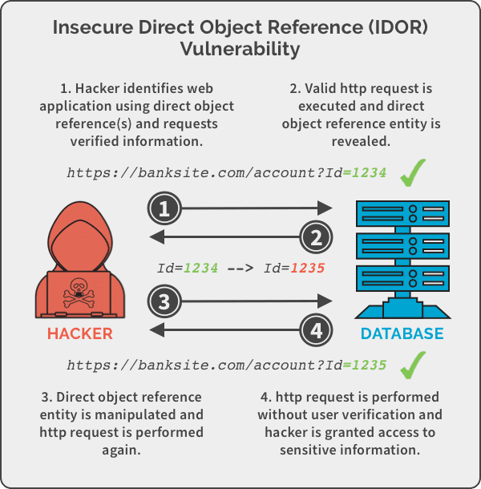
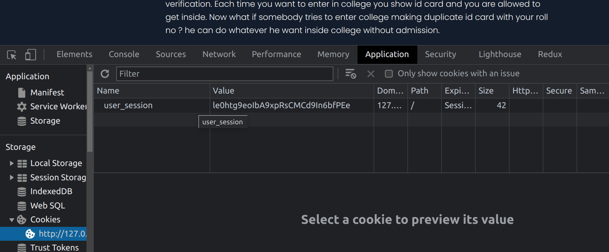

Insecure direct object references (IDOR):
Insecure direct object references (IDOR) are a type of access control vulnerability that arises when an application uses user-supplied input to access objects directly. The term IDOR was popularized by its appearance in the OWASP 2007 Top Ten. However, it is just one example of many access control implementation mistakes that can lead to access controls being circumvented. IDOR vulnerabilities are most commonly associated with horizontal privilege escalation, but they can also arise in relation to vertical privilege escalation.

Real Life Example You got admission in PDEU, when you try to enter from college gate guards ask you for verification right ? Now how will you verify that you are a student of PDEU ? will you go and take admission again ? not really , for that college has given you a college id card for verification. Each time you want to enter the college you show the id card and you are allowed to get inside. Now what if somebody tries to enter college making a duplicate id card with your roll no ? He can do whatever he wants inside college without admission.
I hope you have heard about cookies in websites, let's understand what cookie are ? "" A cookie is a file which is stored in a text form by a website that you would have visited on your browser. It helps websites to identify your device as well as storing certain information which could be referenced later on by the website in any of its functionality.
Are you Ready for Hacking ?
I hope you are ready now, I am really excited. Let's Begin
Let's suppose your name is RAHUL and you are using instagram. You login to website using your id password , website will provide you a unique random token maybe something like this "le0htg9eoIbA9xpRsCMCd9In6bfPEe" it is stored in your browser, do you want to check ? press CTRL+SHIFT+I goto "application" tab, at left hand side check there is cookies tab open that tab , You saw user_session is equal to le0htg9eoIbA9xpRsCMCd9In6bfPEe

This "le0htg9eoIbA9xpRsCMCd9In6bfPEe'' is mapped with your account in server because you don't have to login again and again, Whenever you press like button in instagram that request along with this token is sent to server by browser and server check this token "le0htg9eoIbA9xpRsCMCd9In6bfPEe" is mapped to @RAHUL38 account and now server is like ok Rahul liked HARSHIT post let's keep this information. Now what if I know what token is mapped with your account and I send a request using your token ? I can like,comment any post through your account or even message someone
It is not compulsory that the token has to be "le0htg9eoIbA9xpRsCMCd9In6bfPEe", it can be anything. It can be plaintext, json, hash value,jwt etc. Now let's understand vulnerability, what if token is something like this {"user" : "rahul38"} , I hope you are thinking now what if I change this rahul38 to some other user username. If so ,you found vulnerability my boy/girl. Now you can like,comment,post,message from other account.
But But But, website's are not that simple like we are assuming now. What if they encrypt this {"user" : "rahul38"} to eyJ1c2VyIjoicmFodWwyMyJ9 How will you change this now ? Answer: Decode it and change {"user" : "rahul38"} to {"user" : "rajeev23"}, encode it again and keep in cookie tab again, right ?
How to Change Cookie:- double click to change and refresh page to see changes on site Remember you are free to look any youtube video, check google
Are you Ready for Hacking ?
I hope you are ready now, I am really excited. Let's Begin
Let's Start Lab 3
Click Here